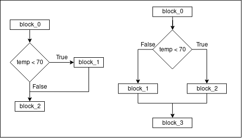

Day 03 Agendas
- Day 02 Reviews
- Day 02 Labs walkthrough
- Day 03 Discussions
- Numeric systems
- Introduction to logic
- Truth table
- Set Theory
- Day 03 Labs
Day 02 Reviews
if vs if/else
- Syntax:
if x < 10: print('x is less than 10') else: print('x is not less than 10') - if may not have an else branch
- You can use pass when either if or else branch contains no logic (tell Python the branch contains an empty block)
if vs if/else
elif
- Is a special case when you see an if/else branch is nested within the else branch of another if/else
- The order of comparision matters. The first check must be the most exclusive, meaning matching the first condition means other conditions can not be True
- if/elif may contains a final else branch
Syntax:
if age > 18:
print('You are no longer in grade school')
elif age > 15:
print('You are in highschool')
elif age > 10:
print('You are in middle school')
elif age > 5:
print('You are in elementary school')
else:
print('You are too young to go to school')

Loops
- Python supports while loop
- Syntax:
answer = print('Do you like Python? (please say Yes)') while answer != 'Yes': print('Are you sure? Python is really great!') answer = print('Do you like Python? (please say Yes)') - Loop condition must be updated within the loop
- If counting, the counter must be initialized before the condition
- Example:
counter = 1 while counter < 10: print('Counting:', counter) counter = counter + 1
Lab 02 Walkthrough
Assignment #1: I can calculate your age!
Write a script to ask current user for his/her birth year, then ask for the current year. Validate that the birth year is less than current year and print out the current user's age. Print an error otherwise.
- What is our input? birth_year, and current_year
- What kind of processing/logic do we need?
- Convert birth_year and current_year into int
- Validate birth_year is before current_year, using... If/Else
- Calculate current user's age
Assignment #1: I can calculate your age!
answer = input('What is your birth year? ')
birth_year = int(answer)
current_year = int(input('What is the current year? '))
if birth_year <= current_year:
age = current_year - birth_year
if age > 1:
print('You are', age, 'years old')
else:
print('You are', age, 'year old')
else:
print('Invalid input! Birth year can not be in the future')
Lab 02:
Assignment #2: Advanced Math
Write a script to print out a multiplication table for a number specified by the user.
- What is our input? multiplication_table_number
- What kind of processing/logic do we need?
- Validate the number is between 1 and 10
- Meaning...if number < 1: error, else, if number > 10: error, else OK, using... if/elif
- Initialize counter = 1
- Calculate and print number * counter upto 10
Assignment #2: Advanced Math
number = int(input('Please enter a number between 1 and 10: '))
if number < 1:
print('Number is too small. It must be between 1 and 10')
elif number > 10:
print('Number is too large. It must be between 1 and 10')
else:
print('Multiplication table for', number)
counter = 1
while counter <= 10:
print(number, '*', counter, '=', number * counter)
counter = counter + 1
print('Done!')

Lab 02
Assignment #3: Even more advanced math
Print out the multiplication tables from 1 to 10
Assignment #3: Even more advanced math
Print out the multiplication tables from 1 to 10
- Use previous assignment: Multiplication loop is the same
- Instead of using user input, initialize table_number to 1
- Print the mutiplication table, with table_number upto 10
- table_number is another counter
number = 1
while number <= 10:
print('Multiplication table number', number)
counter = 1
while counter <= 10:
print(number, '*', counter, '=', number * counter)
counter = counter + 1
number = number + 1
Lab 02:
Assignment #4: FizzBuzz!
- Write a script to ask the user for a number between 20 and 100
- Count upto that number. However...
- If the current number is divisible by 3, print "Fizz" instead
- If the current number is divisible by 5, print "Buzz" instead
- If the current number is divisible by both 3 and 5, print "FizzBuzz"
Assignment #4: FizzBuzz!
- What's our input? number
- What kind of processing/logic do we need?
- Validate the number is between 20 and 100, using...If/Elif
- Initialize counter = 1
- Loop the following until counter == number
- What kind of branch do we use? If/Elif
- if counter % 3 == 0: print Fizz
- elif counter % 5 == 0: print Buzz
- elif counter % 15 == 0: print FizzBuzz
- else print counter
number = int(input('Please enter a number between 20 and 100: '))
if number < 20:
print('Error! Number must be between 20 and 100, inclusive')
elif number > 100:
print('Error! Number must be between 20 and 100, inclusive')
else:
counter = 1
while counter <= number:
if counter % 3 == 0:
print('Fizz')
elif counter % 5 == 0:
print('Buzz')
elif counter % 15 == 0:
print('FizzBuzz')
else:
print(counter)
counter = counter + 1
Assignment #4: FizzBuzz!
- What's wrong? when counting 15, we expect FizzBuzz, but we see Fizz instead
- Why? because 15 is divisible by 3, 5, and 15
- Solution? test the most exclusive condition first
number = int(input('Please enter a number between 20 and 100: '))
if number < 20:
print('Error! Number must be between 20 and 100, inclusive')
elif number > 100:
print('Error! Number must be between 20 and 100, inclusive')
else:
counter = 1
while counter <= number:
if counter % 15 == 0:
print('FizzBuzz')
elif counter % 3 == 0:
print('Fizz')
elif counter % 5 == 0:
print('Buzz')
else:
print(counter)
counter = counter + 1
- Any other solutions?
- Divisible by 3 and 5 are not mutually exclusive
- If counter is divisible by 15, it is also devisible by both 5 and 3
- We can check if counter is divisible by 3 and 5 independently of each other:
if counter % 3 == 0: print('Fizz') if counter % 5 == 0: print('Buzz')
- We still need to decide if we should print out the counter
- There are two cases: special (Fizz, Buzz) and not special (just counter)
- Use a special flag to see if we need to print out the counter
number = int(input('Please enter a number between 20 and 100: '))
# skip validation to save some room
counter = 1
while counter <= number:
special = False
if counter % 3 == 0:
print(counter, 'turns into Fizz')
special = True
if counter % 5 == 0:
print(counter, 'turns into Buzz')
special = True
if not special:
print(counter)
counter = counter + 1
- 15 is checked twice, and appears twice
- Because we use print(), and print terminate the line
- Maybe we can build a string before printing only once
number = int(input('Please enter a number between 20 and 100: '))
# skip validation to save some room
counter = 1
while counter <= number:
special = False
output = ''
if counter % 3 == 0:
output = output + 'Fizz'
special = True
if counter % 5 == 0:
output = output + 'Buzz'
special = True
if not special:
output = str(counter)
print(output)
counter = counter + 1
More data types: collection
- A collection data type contains multiple items
- Example of collection items: list, tupple, set, dictionary, string
- You can get the size of a collection using len(collection)
- A collection can be iterrated, using a for/in loop:
for item in collection: print(item) do_something_with_item - Using for loop, you do not need to update counter, or condition
list
- A list is an ordered collection data type
- Items within a list does not need to be of the same types
- Within python, you can construct a list by:
alist = [1, 2, "three"] - You can access an item within a list using its index starting at 0
- With the example above:
- alist[0] gives number 1
- alist[2] gives string "three"
- List index can be negative, meaning indexing from the right:
- alist[-1] gives string "three"
- alist[-2] gives number 2
- You can get the size of a list using len()
>>> alist = ['a', 'b', 'c', 'd'] >>> len(alist) 4
Example: Count from 1 to 10
numbers = [1, 2, 3, 4, 5, 6, 7, 8, 9, 10]
print('Counting', len(numbers), 'times:')
for number in numbers:
print(number)
for number in [1, 2, 3, 4, 5, 6, 7, 8, 9, 10]:
print(number)
- You can append to a list:
>>> alist = [1, 2]
>>> print(len(alist))
2
>>> alist.append("three")
>>> print(len(alist))
3
>>> for item in alist:
... print(item)
1
2
three
- You can pop an item from a list
- Without an argument, pop gives the last item
>>> alist = [1, 2, 3, 4]
>>> x = alist.pop()
>>> print (x, alist)
4 [1, 2, 3]
>>> print(alist.pop(1))
2
>>> print(alist)
[1, 3]
- You can delete an item from a list:
>>> alist=[1, 2, 3] >>> del alist[1] >>> print(len(alist)) 2 >>> print(alist) [1, 3]
- You can update an item of a list:
alist = [1, 2, 3] alist[1] = 'x' print(alist) # print [1, x, 3]
- You can concaternate two lists
>>> listA = [1, 2, 3]
>>> listB = [4, 5, 6]
>>> listC = listA + listB
>>> print(listC)
[1, 2, 3, 4, 5, 6]
>>> listD = listA.append(listB)
>>> print(listD)
None
>>> print(listA)
[1, 2, 3, [4, 5, 6]]
>>> # ListA is a list of 4 items. The 4th item (index 3) is a list with 3 items
- It is so common to need a list of 0 to x that Python has a shorthand to do that
- To iterate numbers from 0 to 19:
for number in range(20): print(number) # print 0, 1, 2, .... 17, 18, 19. NOT 20 - Official syntax:
range(10) # generate [0, 1, 2, 3, ...., 8, 9]range(2, 10) # generate [2, 3, ... 8, 9]range(2, 10, 2) # generate [2, 4, 6, 8]
Slicing
- We can slice a list, just like bread...
- Syntax: alist[start:end:step]
- Create a new list
- Starting at index start. start is 0 when left blank
- Ending at index end. end is last index with left blank
- Using an increment of step for each element. step is 1 when left blank
- What do we get?
>>> alist = [1, 2, 3, 4, 5, 6, 7, 8, 9, 10] >>> aslice = alist[1:3] # gives [2, 3] >>> aslice = alist[4::2] # gives [5, 7, 9] >>> aslice = alist[:4:] # gives [1, 2, 3, 4] >>> aslice = alist[::-1] # gives [10, 9, 8, 7, 6, 5, 4, 3, 2, 1] >>> aslice = alist[1:3:-1] # gives []: empty list >>> aslice = alist[3:1:-1] # gives [3, 2]
Tuple
- It's like a list. It is ordered
- Usually can be used interchangably with a list
- But tupple is immutable
- You can not append, delete, pop, etc with a tuple
- Why have a tuple? Large tuple iteration is faster than list
- You can convert a list to a tuple using tuple(alist)
- You can convert a tuple to a list using list(atuple)
- You can slice a tuple, just like a list
- You can access all items of a tuple in one shot:
atuple= (1, 2, 3, 4) (w, x, y, z) = atuple print(x) # print 2 print(z) # print 4 - Sometimes the () can me omitted:
x, y, z = 1, 2, 3 print(x) # print 1 print(z) # print 3 - To do this, you must access all items of a tuple:
x, y = 1, 2, 3 # Throw an error: ValueError: too many values to unpack
Set
- A set can be constructed using { and }
- A set can created using another collection (a list or a tuple)
- Use set(collection)
- A set is a collection of unique items:
>>> alist = [1, 2, 3] >>> alist.append(3) >>> print(alist) [1, 2, 3, 3] >>> aset = set(alist) >>> print(aset) {1, 2, 3}
- You can not access an item using index. A set is not ordered
- You can add or remove an item from a set, using the value
>>> aset = {1, 2, 3}
>>> aset.add(4)
>>> print(aset)
{1, 2, 3, 4}
>>> aset.remove(2)
>>> print(aset)
{1, 3, 4}
dictionary
- A collection of key:value pairs
- Each item value can be anything
- A dict is not ordered
- You can access an item using adict[key]
- It looks like a list, but it is not!
- alist[4] exists means alist[3] also exists. adict[4] exists does not means adict[3] also exists
- The key is usually a string, but it can be a number as well
adict = {
'key0': 'value0',
'key1': 10,
5 : 'five'
'5' : 'five string'
}
print(adict['key0']) # print 'value0'
print(adict[5]) # print 'five'
print(adict[5] == adict['5']) # print False
How do we iterate a dictionary?
- Get a list of keys, and iterate through that list using for
adict = {'k0': '0', 'k1': 1} keys = adict.keys() # keys is ['key0', 'k1'] for key in keys: value = adict[key] print(key, "->", value) - Use a shorthand:
adict = {'k0': '0', 'k1': 1} for key in adict: print(key, '->', adict[key])
More on string
- Technically, a string is a collection of characters
- A string is immutable: You can not update an item within a string:
s = 'this is a string' s[0] = 'T' # Error: TypeError: 'str' object does not support item assignment - You can access a character from the string, using its index
- You can slice a string just list a list or tuple
- You can iterate through a string:
s = 'This is a string' for c in s: print('A character:', c)
collections
- All collections support the in operation to test for membership:
if x in collection: - All collections that support indexing will gives an error if the index is out of bound
- All collections supports iteration. You can use the for loop
- You can always convert a for loop to while
- But for loop is usually cleaner, and preferred
Examples
Example #1: read a string from the user, and convert each numeric character to a full string: '0' becomes 'zero', '1' becomes 'one'
- What type of loop do we need? for
- for each character c, if c is '0', print 'zero', if c is '1', prints 'one'
- Within the list, we need a branch. What type of branch? if/elif
- Since want to print the whole input on one line, we need to build the input string, one character at a time
- By concaternating either the character, or the number replacement
Example #1: read a string from the user, and convert each numeric character to a full string: '0' becomes 'zero', '1' becomes 'one'
statement = input('Please enter a statement, with some numbers: ')
output = '' # initialize the output, which is concaternated as we go through the loop
for c in statement:
if c == '0':
output = output + 'zero'
elif c == '1':
output = output + 'one'
...
elif c == '9':
output = output + 'nine'
else:
output = output + c
print(output)
Example #1: read a string from the user, and convert each numeric character to a full string: '0' becomes 'zero', '1' becomes 'one'
Most if/elif problem can be solved using dictionary and a membership check
statement = input('Please enter a statement with some numbers: ')
mapping = {'0': 'zero', '1': 'one', '2': 'two' } # and more
keys = mapping.keys()
output = ''
for c in statement:
if c in keys:
output = output + mapping[c]
else:
output = output + c
print(output)
Example #2: count upto a number specified by the user, and print if the current number is odd or even
- Read user's input, and convert to a number. Validate it
- This time, we use range()
num = int(input('Please enter a number greater than 5: '))
while num <= 5:
print('Bad input! Number must be greater than 5')
num = int(input('Please enter a number greater than 5: '))
for n in range(num):
if n % 2 == 0:
print(n, 'is an odd number')
else:
print(n, 'is an even number')
Example #2: count upto a number specified by the user, and print if the current number is odd or even
- A different solution:
- n % 2 (the remainder) is always either 0 or 1
- What if we have a list of two items ['odd', 'even'] and we can simply select one of the two
num = int(input('Please enter a number greater than 5: '))
while num <= 5:
print('Bad input! Number must be greater than 5')
num = int(input('Please enter a number greater than 5: '))
oddeven = ['even', 'odd'] # why? can we set it to be ['odd', 'even']?
for n in range(num):
remainder = n % 2
print(n, 'is an', oddeven[remainder], 'number' )
Example #3: Keep asking user to enter a list of names. Then, evenly try to split them into 3 groups: A, B and C. Print out the result
Jon belongs to group A
Nancy belongs to group B
Steve belongs to group C
...
Totally, there are 20 people
- We need a list of groups, containing the "names": ['A', 'B', 'C']
- Keep asking the user for a name to add to a list of names
- Until user enter "finish"
- For each name in the list of names
- Increment a counter
- Determine the group name, using the counter as index to groups list
- What if counter is larger than 3?
- We can use % to make wrap the index around
- print name belongs to group group_name
- Print the total number of people
Example #3: Keep asking user to enter a list of names. Then, evenly try to split them into 3 groups: A, B and C. Print out the result
groups = ['A', 'B', 'C']
number_of_groups = len(group)
names = []
name = input('Please enter a name. Enter "finish" to stop: ')
while not name == 'finish':
names.append(name)
name = input('Please enter a name. Enter "finish" to stop: ')
count = 0
for name in names:
print(name, 'belongs to group', groups[count % number_of_groups])
count = count + 1
print('Totally, there are', count, 'people')
Example #4: Ask a user for a statement. Then, count the number of apperance for each letter
- We need something to keep the result
- The result includes letter and the associated occurance
- Look like a key:value, so we use a dictionary
- Iterate through the statement, for each character:
- If the letter already exists in the result (we have a count for it), get the count and increment it.
- Use in to test for membership
- Upate the count after the increment
- If the letter is not in the result: initialize the count to 1
- Update the result to include the current character
s = input('Please enter a sentence: ')
result = {} # initialize an empty dictionary
for c in s:
if c in result.keys():
count = result[c]
count = count + 1
result[c] = count
else:
result[c] = 1
for c in result:
print(c, 'appears', result[c], 'times')